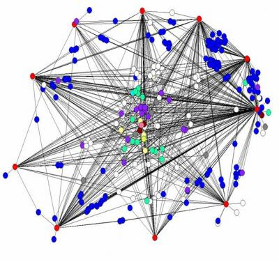
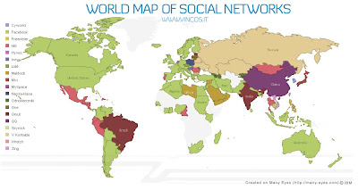

As redes sociais como factor potenciador da produtividade e inovação nas empresas !!
Publicado em 2009-10-29 15:56:00
Quando se fala de incremento da produtividade (individual e de grupo) temos que admitir que a produtividade aumentou continuamente nestas últimas décadas, mas que apesar de tudo isso as empresas parecem não ter conseguido melhorado sua situação financeira nem a dos seus colaboradores. Aliás esta é a problemática da produtividade desde há já longos anos, em que apesar da evolução e dos enormes saltos tecnológicos, os processos em si não evoluíram tanto como seria de esperar, tal como não evoluiu a "tradicional forma de fazer as coisas". Facto aliás que desespera o mundo, envolvido numa lógica de competitividade acrescida não correspondida pelo factor produtividade.
{kind=link}
Para que se consiga uma significativa melhoria de desempenho será exigida a adopção de uma lógica de intercâmbio e de inovação dentro dos ecossistemas sociais, tornando possível que as pessoas possam melhorar o seu próprio desempenho através de uma resolução criativa de problemas, em processos dinâmicos que implicam a capacidade de conectar-se entre os seus pares, dentro e fora da organização. Contrariamente à prática do século anterior, quando a hierarquia tudo definia, toda uma nova dinâmica de competitividade exige que os processos sejam conduzidos pelas pessoas directamente, com a rapidez a que os negócios proliferam e assim o determinam. As decisões têm que ser rápidas e à velocidade a que se move a nova economia mundial e altamente globalizada.
O mundo está a viver um processo de mudança disruptiva e a assistir-se a uma vaga transformacional que se iniciou com o movimento de open-source e que ameaça estender-se a toda a sociedade e actividades humanas. Todas as ideias desenvolvidas de forma aberta tem o contributo activo de grandes comunidades levando as pessoas a participar cada vez mais nos processos de inovação e a criar valor. A democratização da inovação e a partilha acelerada do conhecimento é um processo aberto, dinâmico e viral, que está a determinar por sua vez novas forma de fazer ciência, investigação, aprendizagem, etc.
O sucesso no mundo dos negócios depende hoje de factores que dizem sobretudo respeito à organização humana e em torno de aspectos como: a colaboração, inovação e resolução de problemas. Através da introdução da computação social, pode trazer-se racionalidade e rigor a esses domínios e, simultaneamente, fornecer as ferramentas para a comunidades florescerem e se desenvolverem.{kind=link}
E é aqui que as redes sociais e as plataformas de software de web social, como blogs, wikis e principalmente organizadas em torno de comunidades on-line podem tornar as empresas, e as sociedades em geral, mais produtivas e eficazes. Considero pois que o futuro da colaboração dependerá, no futuro, inteiramente do que se poderá designar por produtividade social - fazer as coisas acontecerem através de redes sociais ad hoc em vez de dependerem apenas de progressos individuais ou em colaboração num grupo de trabalho, que é sempre muito mais restrito.
Charles Darwin, afirmou: "Na longa história da humanidade (e das espécies animais também) aqueles que aprenderam a colaborar e improvisar mais efectivamente têm prevalecido".
A produtividade social irá crescer geometricamente e de modo viral, tanto mais quanto as pessoas e os serviços aderirem à revolução que já está em marcha. E a "magia" da adesão, que à partida parece complexa e difícil de atingir, consiste em transformar os colaboradores e pessoas passivas, em actores num comunidade que se identifique com a sua forma de ver o mundo e que lhe proporcione uma participação activa e imersiva nos processos e negócios da empresa ou da organização em que se inserem. Imagine ainda os seus clientes a participarem e a contribuírem com ideias e opiniões sobre novos produtos e serviços, bem como sobre novas formas de fazer as coisas? Aqui, cito Albert Einsten que disse "Love is a better teacher than duty.".
Pois, que benefícios acrescidos tem este tipo de colaboração ad hoc, indo para além das fronteiras organizacionais ? Talvez para projectos ambíguos e incertos e para as tarefas em que os próximos passos e destinos eventualmente não sejam de todo evidentes - concepção de um produto inovador ou resolver um problema do cliente, especialmente espinhoso, por exemplo. Tais projectos exigem conversas com pessoas fora dos grupos normais de trabalho, rajadas de percepção, "feedbacks" e resolução criativa de problemas, ao invés de discussões com colegas de equipe actual, o conhecimento estático, e processos pré-definidos.
Usando recursos como fóruns de discussão, blogs, wikis e gestão de documentos, uma rede social une os funcionários das empresas e os seus processos de trabalho com os clientes, prospects, fornecedores, colaboradores, colaboradores externos e terceiras partes interessadas.
No processo de socialização, uma rede de relações sociais é estabelecida. A Computação Social é, portanto, em essência, uma forma de codificar e explorar as relações entre pessoas e agentes articulados em espaços sociais com multidões, comunidades, países, mercados, etc.
Um aspecto deveras importante desses serviços providenciados pelas plataformas de redes sociais, que não podem ser ignorados no entanto, é a forma como permitem às pessoas conectar-se com os outros, construindo uma rede de amigos e conhecidos. Muitas destas conexões podem até trabalhar para outras empresas que são clientes potenciais ou existentes, e amizade deste colaborador poderia potencialmente resultar numa ligação e oportunidade de negócio. Por muitos anos, os executivos têm usado o campo de golfe como sua base de redes sociais. Agora podem utilizar as redes sociais para esta tarefa concentrarem-se no seu jogo, quando forem jogar golfe !!!
{kind=link}
As aplicações de computação social estão agora a centrar-se na web com suporte às comunidades on-line, como redes sociais, wikis, blogs e mundos virtuais, fornecendo feedback sobre o comentário social interactivo, o entretenimento, os avanços científicos, médicos e serviços empresariais, etc. Esta também suportam as técnicas de previsão colectiva e a tomada de decisão, utilizando o poder combinado de grupos e comunidades para resolver problemas difíceis, como aqueles associados com as grandes catástrofes e conflitos. Além disso, são cada vez mais aplicados para ajudar a analisar como evolução das tecnologias e políticas podem alterar o comportamento político, social e cultural.
Sem dúvida que as redes sociais, o social bookmarking, os fóruns, blogs, Wikis, partilha de vídeo e microblogging são os novo caminhos para a produtividade nas empresas, nas escolas e em todas as outras formas que a actividade humana assume.
Demonstrar os benefícios de produtividade social de uma forma que faça sentido para as empresas em adaptar a TI às exigências do mercado de formas quantificáveis e com retorno sobre o investimento, são talvez difíceis de mostrar quando se fala de incentivo à inovação e solução de problemas ambíguos ao invés da sua efectividade em melhorar processos individuais ou de grupo de trabalho e com menores custos.
Como já atrás mencionado, as redes sociais ou software social está totalmente focado em capacitar as conversação e a troca de ideias. As redes de cooperação são focalizados em grupos de acesso e organização de dados em formatos de recursos variados que permitem a tomada de decisões, a colaboração e reutilização da informação ou conhecimento. As redes de cooperação será cada vez mais criticamente importantes para as empresas e organizações, ajudando a estabelecer uma cultura de inovação e materializando a excelência operacional.
Ainda de acordo com o analista de mercado Gartner, esta aponta em análise divulgada na última terça-feira (27/10/2009) que, em 2013, 80% das plataformas de colaboração das empresas serão inspiradas nas técnicas adoptadas por redes sociais, sites e blogs de hoje (ver Artigo). Ainda segundo este analista do mercado de sistemas de informação, também por 2013, mais de 80% das empresas terão como norma partilhar informações na Web, através de mecanismos e sites web social (ver predict da IDC).
O Futuro
Muitas organizações têm vindo nos últimos anos a adoptar ferramentas Web 2.0 para estimular a inovação e a produtividade. E algumas estão a começar a abraçar as redes sociais como uma forma mais eficaz de serviços de marketing e acompanhamento do comportamento dos seus clientes. Aliás, as redes colaborativas na empresa, já são hoje tão indispensáveis como e-mail ou o telefone.
Mas a aplicação de computação social para melhorar a qualidade do processo de decisão, a optimização de processos e cenários de previsão ainda não estão no horizonte das empresas, mas serão certamente os próximos passos no sentido da adaptação e capacidade de sobrevivência das empresas, num mercado globalizado e cada vez mais competitivo.
O negócio não está separado da mudança social. No futuro, a computação social será um componente essencial e integrante da gestão estratégica e operacional da empresa do futuro, ao mesmo tempo, transformando a web numa plataforma verdadeiramente global, colaborativa e social, tirando partido da inteligência colectiva ao nível planetário.
Num futuro não muito longínquo (2-5 anos) os mundos virtuais em 3D, os jogos e as simulações farão também parte da panóplia de interacções, numa sociedade integrada em rede e capacitarão as redes sociais e empresariais do futuro, que terão características altamente imersivas e facilitarão ainda mais a socialização, independentemente do local físico de cada pessoa num dado momento.
Mais, serão ainda as redes sociais o elemento aglutinador que determinará quais as tecnologias que serão adoptadas em cada momento, em função do ponto evolutivo em que a humanidade se encontrar !!
O Autor: Francisco Gonçalves / IT Architect @ Softelabs
@twitter & @e-mailO Futuro
Muitas organizações têm vindo nos últimos anos a adoptar ferramentas Web 2.0 para estimular a inovação e a produtividade. E algumas estão a começar a abraçar as redes sociais como uma forma mais eficaz de serviços de marketing e acompanhamento do comportamento dos seus clientes. Aliás, as redes colaborativas na empresa, já são hoje tão indispensáveis como e-mail ou o telefone.
Mas a aplicação de computação social para melhorar a qualidade do processo de decisão, a optimização de processos e cenários de previsão ainda não estão no horizonte das empresas, mas serão certamente os próximos passos no sentido da adaptação e capacidade de sobrevivência das empresas, num mercado globalizado e cada vez mais competitivo.
O negócio não está separado da mudança social. No futuro, a computação social será um componente essencial e integrante da gestão estratégica e operacional da empresa do futuro, ao mesmo tempo, transformando a web numa plataforma verdadeiramente global, colaborativa e social, tirando partido da inteligência colectiva ao nível planetário.
Num futuro não muito longínquo (2-5 anos) os mundos virtuais em 3D, os jogos e as simulações farão também parte da panóplia de interacções, numa sociedade integrada em rede e capacitarão as redes sociais e empresariais do futuro, que terão características altamente imersivas e facilitarão ainda mais a socialização, independentemente do local físico de cada pessoa num dado momento.
Mais, serão ainda as redes sociais o elemento aglutinador que determinará quais as tecnologias que serão adoptadas em cada momento, em função do ponto evolutivo em que a humanidade se encontrar !!
O Autor: Francisco Gonçalves / IT Architect @ Softelabs
Artigos interessante relacionados com esta temática:
Social networks in the enterprise: Facebook for the Fortune 500
- Burton Group Field Research Study: Social Networking Within the Enterprise
Anexos ():
Artigo de Dawn M. Foster. Dawn que tem mais de 13 anos de experiência em negócios e tecnologia, com experiência em planeamento estratégico, gestão, construção da comunidade, gestão comunitária, software de fonte aberta, pesquisa de mercado, media social e RSS. Ela tem experiência de construção de novas comunidades, gestão de comunidades existentes e prestar consultoria e assessoria a empresas com uma ênfase particular na desenvolvimento de comunidades de código aberto.
Por Dawn M. Foster : Empresas como Comunidades - a produtividade através da colaboração.
Quando a maioria das pessoas, e principalmente os gestores, pensam sobre comunidades on-line, associam logo a comunidades externas de grupos aleatórios, por vezes, de pessoas que interagem em torno de algum interesse comum. Embora muitas comunidades on-line se encaixem nesta categoria, tenho visto um número crescente de empresas que estão a construir comunidades de trabalhadores dentro de suas organizações para melhorar a colaboração e alcançar melhorias significativas de produtividade. Eu mesmo tenho a sorte de ter trabalhado dentro das organizações que se sentiam mais como uma comunidade do que uma empresa e nas quais a colaboração era uma prioridade e meta a atingir.
Jitendra Kavathekar falou sobre essa ideia num post recente sobre agilidade da empresa como um caminho para ROI. Ele diz que a colaboração é o ingrediente essencial para fazer as coisas na empresa de hoje. " A colaboração é uma das funções-chave de qualquer tipo de comunidade, mas as comunidades são mais do que apenas um lugar para as pessoas colaborarem. Em geral, grandes comunidades trazem as pessoas para formar uma identidade partilhada e coesão entre os membros. Muitas empresas lutam com formas de conseguir que todos os seus colaboradores possam trabalham juntos como um grupo coeso, mas cada vez mais orientados para a comunidade é uma óptima maneira para que os empregados sejam levados a envolverem-se mais e a sentir como eles são realmente parte da identidade corporativa e não apenas mais uma engrenagem da grande roda. Deixe-me dar alguns exemplos que demonstram alguns dos benefícios de tratar a empresa como uma comunidade.
Colaboração em documentos e outras informações.
Num ambiente de escritório estamos todos numa situação onde várias pessoas estão de alguma forma a editar um documento e a envia-lo por e-mail, e sempre com a elevada probabilidade de perder versões das edições efectuadas pela substituição dos documentos após edição; tal, traduz-se normalmente num caos de gestão dos documentos em geral. Ter um caminho melhor para que os colaboradores possam trabalhar nos documentos é um benefício óbvio de abordagem comunitária que pode ser facilmente demonstrada pela economia de tempo e de melhorias da qualidade global daí resultante. No entanto, podemos tomar dar a essa abordagem comunitária mais um passo. Vamos supor que tem 3 pessoas editando um documento que contém uma proposta de algum novo negócio da sua empresa, que está a tentar ganhar. O que acontece quando essas três pessoas estão editando um documento que é visível na comunidade para que outras pessoas vejam? Agora, tem um mecanismo de feedback adicional, ideias e sugestões de pessoas que nunca poderia ter pensado perguntar sobre a proposta. Pode até encontrar no meio do processo alguém que tem um conhecimento profundo da empresa e que lhe pode oferecer insights sobre a empresa, que caso contrário teria sisdo desconhecidos. Agora, isso não significa que todos os documentos da empresa estarão ao alcance de todos. As soluções que escolher para a sua plataforma de colaboração em comunidade devem ter uma estrutura robusta de privacidade, onde pode obter documentos sensíveis e controlar quem pode ver ou editar esses mesmos documentos em particular para cada projecto ou processo.
Uma melhor tomada de decisões.
Outro benefício de uma abordagem comunitária está no processo de decisão. Certa vez trabalhei numa empresa onde as decisões importantes foram debatidos na nossa comunidade on-line antes de implementar mais mudanças. Estas decisões de estratégia de produto podem ser obtidas em funções de feedbacks e ideias, de outros colaboradores da empresa, que de outra forma não seriam obtidas e se perderiam para sempre. Muito embora não possa certamente (e não deva) abrir todas as decisões para um voto e sugestões da sua organização, pode começar por pedir às pessoas as suas opiniões e debater os méritos de várias opções para as quais decidiu previamente abrir em discussão mais ampla. SE agir desta forma considero pois que se irá surpreender com o conhecimento adquirido em lugares inusitados dentro da sua organização.
Obter Respostas.
Todos os dias nos deparamos com algo que desconhecemos. Eu posso tentar encontrar a resposta no Google ou postar a minha pergunta ao Twitter, mas como se essas questões são específicas da minha organização ? Na maioria dos casos, algum outro funcionário, provavelmente sabe a resposta à sua pergunta e pode rapidamente fornecer-lhe uma resposta. Eu vi este modelo ser utilizado para questões que vão desde onde encontrar algum pedaço de documentação (políticas de recursos humanos, documentos legais, etc) para perguntas sobre um trabalhador recém-transferido e a necessitar de recomendações para um bom médico que é coberto pelo plano de seguros da empresa, por exemplo. Estas questões e respostas ad hoc (Q & A) entre os funcionários para a difusão do conhecimento, são altamente compensatórias para a organização em termos de produtividade , mas também permitem alicerçar e sedimentar o espírito de grupo entre os colaboradores, alimentando simultâneamente silos de "know-how" funcionais e organizacionais, sem qualquer custo adicional para a empresa.
Colocando a sua empresa a comportar-se como uma comunidade pode ser uma grande mudança organizacional, Particularmente dentro de determinados tipos de empresas, que tenham que lidar com conhecimento organizacional de forma mais intensiva, mas os benefícios podem ser verdadeiramente surpreendentes.
Esta é uma tradução de post colocado por Dawn M. Foster. Dawn tem mais de 13 anos de experiência em negócios e tecnologia, com experiência em planeamento estratégico, gestão, construção da comunidade, gestão comunitária, software de fonte aberta, pesquisa de mercado, media social e RSS. Ela tem experiência de construção de novas comunidades, gestão de comunidades existentes e prestar consultoria e assessoria a empresas com uma ênfase particular na desenvolvimento de comunidades de código aberto.
Dawn tem um MBA da Universidade de Ashland e do grau de bacharel em ciência da computação pela Universidade Estadual de Kent. Ela usa uma combinação de técnicas e conhecimentos de negócios e educação para ajudar as empresas a obter o valor real do negócio da participação em comunidades on-line. Dawn regularmente blogs sobre comunidades on-line como o autor do Fast Wonder Blog, em blogs WebWorkerDaily GigaOM's. Ela é a autora do livro, Empresas e Comunidades: Participar sem ser desprezado. Dawn está actualmente a fornecer serviços de consultoria para Twiki, Inc.
Francisco Gonçalves / IT Architect (Oct 2009).
o nosso lema "KEEP IT SIMPLE"!! Just Do It Better!!
SofteLabs, os especialistas em ambientes abertos com LINUX, Sistemas e Tecnologias de Virtualização, ao nível do Data-Center, de Servidores e DeskTops, Virtual Appliances, Cloud-Computing (Computação em Nuvem ), Colaboração Online & Software Open-Source.